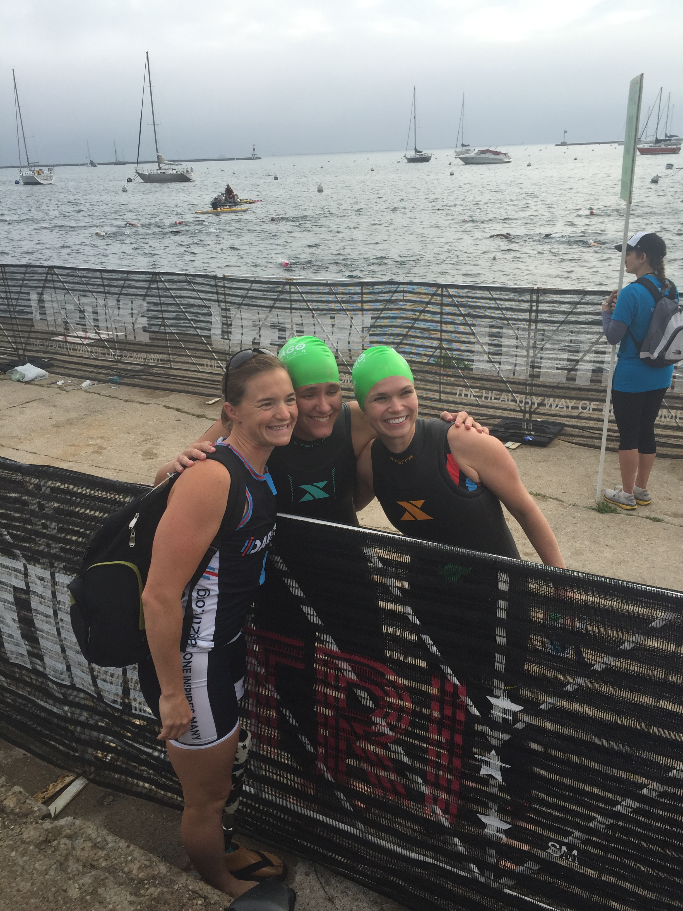
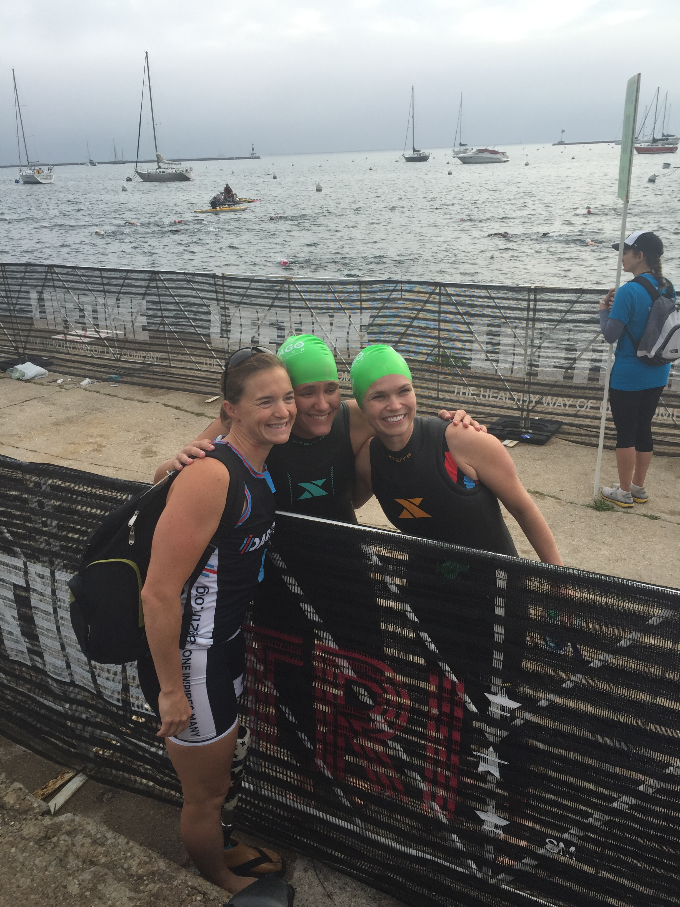
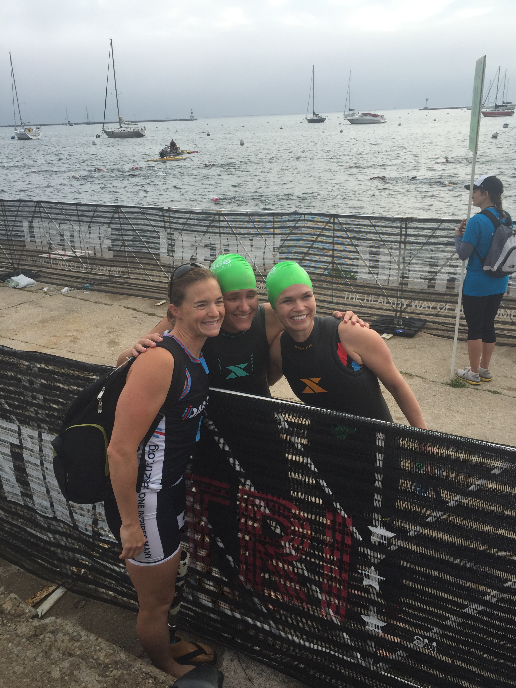

Click here
Challenging Limits from Jesse Goddard on Vimeo.
This video was produced and edited by Jesse Goddard.

 


Ashley Eisenmenger has been blind all of her life.
As a result of premature birth, Ashley and her triplet
sisters were diagnosed with retinopathy of prematurity,
an eye condition common among premature babies.
Ashley grew up playing a wide range of sports, but
settled into endurance running upon entering high
school. By the time she had graduated high school,
Ashley had completed two half marathons and
multiple 5k and 10k races. After graduating high
school, Ashley, alongside a friend, completed her
first triathlon. From that finish line on there was
no looking back. Ashley has completed multiple
sprint distance triathlons, two Olympic distance
triathlons, and one half Ironman. Ashley competes
on North Central College’s Women’s Triathlon
Team. After being named the 2016 Paratriathlon
National Champion, Ashley was named to the
Team USA Paratriathlon Development Team.
Ashley continues to race competitively and
will graduate college in the spring of 2018.
Challenging Limits from Jesse Goddard on Vimeo.
This video was produced and edited by Jesse Goddard.
